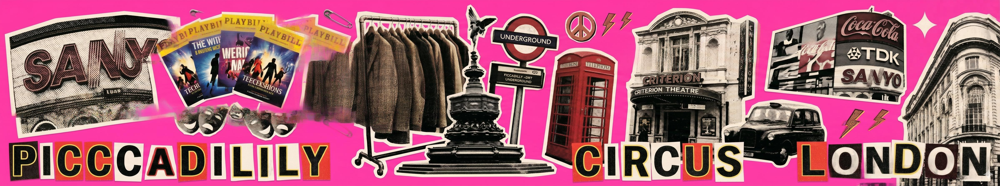
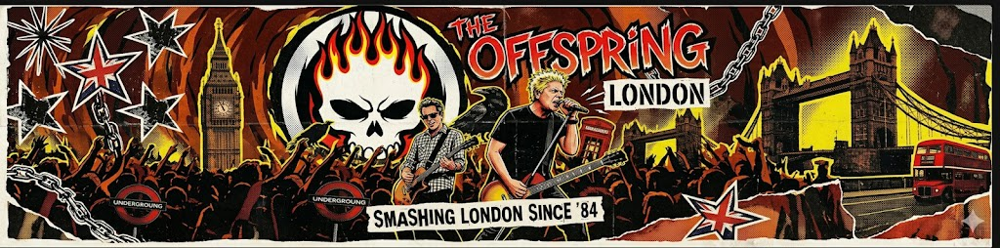
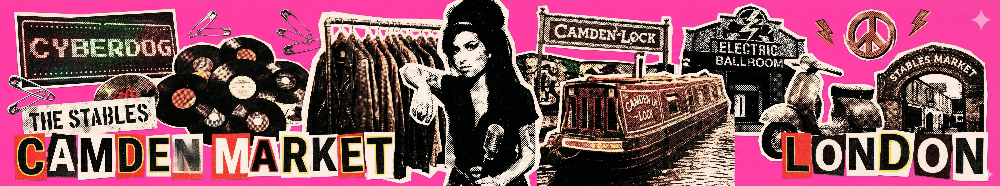
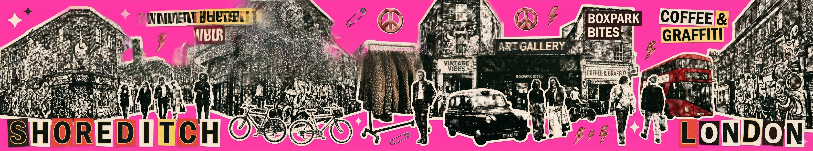
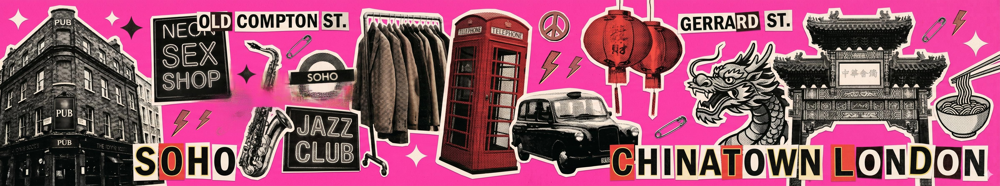
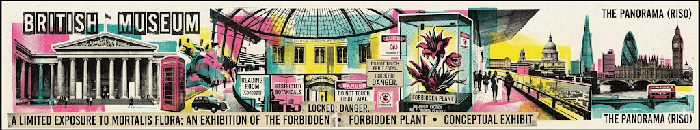
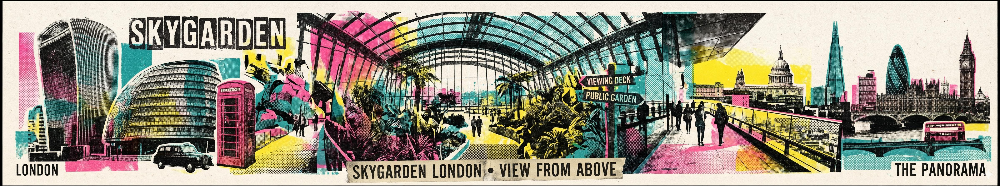
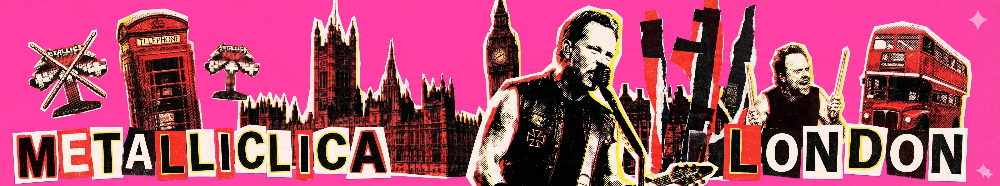
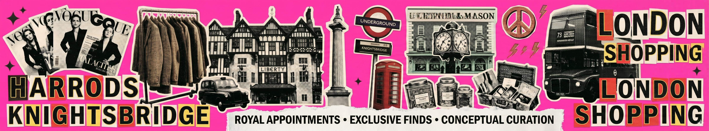

28
יוני
ראשון
The Offspring
- פסטיבל יום שלם עם Dropkick Murphys, Pennywise, PUP & Destroy Boys.
- פתיחה 13:00, ה-Offspring על הבמה ~19:00.
לוגיסטיקה
מקום
Crystal Palace Park, SE19 2GA 📍 מפה
יציאה
~13:00 לכל הליינאפ · ~14:30 לראשית בלבד
הגעה
מטרו Piccadilly Circus → Victoria, רכבת Southern → Crystal Palace (~55 דק')
חזרה
אותו מסלול · תור של ~20–30 דק' אחרי המופע

29
יוני
שני
וינטג': קמדן
- Camden Market — יד שנייה, תקליטים, אווירת רוק. 📍 מפה
- קו Northern → Camden Town. בול בשביל הטריפ הזה.

30
יוני
שלישי
וינטג': בריק ליין
- Brick Lane Vintage Market ושורדיטץ'. Rokit, Beyond Retro ועוד. 📍 מפה
- גן עדן של יד שנייה עם אווירת מזרח לונדון.

02
יולי
חמישי
זמי נוחת · מעבר מלון
- זמי נוחת ב-Luton (LY311, 08:15). Luton Airport Express → St Pancras ואז למלון, ~שעה מהנחיתה. 📍 Luton
- הבנים צ'ק-אאוט מ-Zedwell, כולם עוברים ל-STG Hotel Oxford Street. 📍 STG
- ערב רגוע. Outernet London ליד המלון — מוזיקה דיגיטלית, כניסה חינם. 📍 מפה
הטיסה ממריאה 04:50 מבן גוריון = להיות בשדה ~02:00. יום ראשון רגוע במכוון.

03
יולי
שישי
מוזיאון · קומיקס · קריוקי
- בוקר — המוזיאון הבריטי, כניסה חינם. פסלי הפרתנון מהאקרופוליס באולם 18. לפחות שעתיים. שישי פתוח עד 20:30. 📍 מפה
- צהריים — הליכה ~10 דק' ל-Forbidden Planet, 179 Shaftesbury Ave. שתי קומות של קומיקס, מאנגה ופיגרים. 📍 מפה
- ערב — קריוקי פרטי ב-Lucky Voice, 52 Poland St. 📍 מפה
לאמת מראש: מדיניות גיל ב-Lucky Voice לבן ה-16. בדרך כלל מכניסים בחדר פרטי עם מבוגר.

04
יולי
שבת
וינטג' עם אבא + Sky Garden
- בוקר — Portobello Road Market, נוטינג היל. הכי טוב מ-09:00. קו Central → Notting Hill Gate. 📍 מפה
- אחה"צ / שקיעה — Sky Garden, קומה 35 על 20 Fenchurch St. נוף 360° על לונדון ועל הטמזה. כניסה חינם! 📍 מפה
Sky Garden — פרטים
כתובת
20 Fenchurch St, EC3M 8AF
הגעה
קו Central / Northern → Bank, הליכה ~7 דק'
שעות
ש': 09:00, ע"ש: 09:00 עד 01:00
הזמנה
skygarden.london/book · חינם, חובה מראש
להזמין עכשיו! ב-skygarden.london — הביקורות אומרות לפחות חודש מראש. ה-4 ביולי הוא עוד ~40 יום וכרטיסים אוזלים מהר.

05
יולי
ראשון
Metallica
- מצטרף לערב: בן הדוד עופר. ארבעתכם ביחד לסיומת הטור.
- ההופעה האחרונה של טור M72 בעולם. Pantera & Avatar בחימום.
- ארוחה לפני ב-The Cow ב-Westfield Stratford. 📍 מפה להזמין שולחן ~14:30–15:30.
לוגיסטיקה
מקום
London Stadium, E20 2ST 📍 מפה
דלתות
17:00
יציאה
מהמלון ~16:00. קו Elizabeth: Tottenham Court Road → Stratford (~13 דק')
חזרה
80 אלף איש — להמתין ב-Westfield או ללכת ל-Hackney Wick. בלי רכב.

06
יולי
שני
יום אחרון · טיסה הביתה
- יום שלם בלונדון — הטיסה רק בלילה. צ'ק-אאוט, מזוודות בלובי.
- ערב: נסיעה ל-Heathrow Terminal 4. קו Elizabeth: Tottenham Court Road → T4 (~50 דק'). 📍 מפה
טיסת חזרה
טיסה
EL AL LY318 · Heathrow T4 → TLV
המראה
22:10 ב-06.07 · נחיתה בארץ 05:05 ב-07.07
להגיע
אל על = 3 שעות לפני → בשדה ~19:00, לצאת ~17:45
שימו לב: נוחתים ב-Luton ביום ההגעה — ממריאים מ-Heathrow T4 בחזרה. שני שדות שונים.